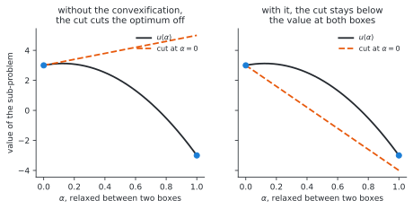
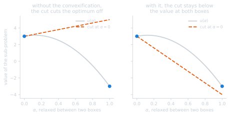

Annex C: tuning the master#
The results are what the method achieves once its settings are right. This page is how they were found, and what each setting does: the two mechanisms that keep the cuts valid, the sweep that makes the user stop choosing between their values, the trust region that decides how far the master may look, the two caps that end a run, and how both depend on the size of the boxes.
Everything here is measured on the problems of the appendix, from eight starting points in two dimensions and three in five, so it is evidence about these landscapes rather than a rule.
The master has two mechanisms, and they must not be combined#
Outer-approximation cuts are supporting hyperplanes only if the value function is convex. On a multimodal problem it is not, and the master offers two distinct mechanisms for keeping its cuts usable. They rest on different arguments, and measuring them together measures neither.


convexificationadds to the objective a convex term vanishing at the integer points. Once its constant dominates the concavity of the relaxed problem, the relaxation is convex and the outer approximation converges. Driven by
convexification_constant, withadaptoff.adaptiverepairs the slope of each cut by least squares against the pairs of points already observed, so that no cut over-predicts a value that has been measured. Driven by
adaptand the convexity marginmin_dfk, with no convexification constant.
The adaptive repair, which reaches the optimum most often#
Rastrigin, ten subdivisions per variable, no convexification constant. Two variables, eight starting points, a budget of \(1000\); each cell is the number of them from which the optimum was reached, and the median cost:
parallel points |
|
10 |
30 |
100 |
300 |
|---|---|---|---|---|---|
1 |
0/8 |
0/8 |
2/8 |
6/8 (294) |
5/8 (294) |
4 |
1/8 |
5/8 |
7/8 |
8/8 (543) |
8/8 (550) |
8 |
1/8 |
1/8 |
8/8 (907) |
8/8 (1000) |
7/8 (1000) |
Two settings matter, and one of them for a different reason than an earlier version of this page gave.
Several parallel points. The master probes one trust-region radius per
point, over geomspace(step / 2, step), so that a feasible master problem stays
available. Four points reach the optimum every time; a single point reaches it
from six starting points out of eight, and eight points also reach it every time
but for nearly twice the cost, spending the budget on probes rather than on
boxes. Four is therefore a cost trade, not a matter of feasibility. With the
trust region charging the catalogue values, a single point used to stop a run
after two or three boxes; that collapse was the metric, not the probing.
A margin on the scale of the objective. min_dfk is subtracted from an
objective difference, so it is an absolute quantity in the units of the
objective, not a ratio. What it does is cross a threshold and then saturate,
rather than pass through a window: over an objective spanning about eighty, the
margin reaches the optimum from one starting point at \(1\), five at \(10\), seven
at \(30\), and all eight at \(100\) and at \(300\). Five variables agree, from none at
\(10\), two out of three at \(30\), and all three at \(100\) and at \(300\):
|
1 |
10 |
30 |
100 |
300 |
|---|---|---|---|---|---|
Rastrigin, \(n=5\) |
\(17.91\) · 0/3 |
\(5.11\) · 0/3 |
\(0.00\) · 2/3 |
\(0.00\) · 3/3 |
\(0.00\) · 3/3 |
Ackley, \(n=5\) |
\(8.99\) · 0/3 |
\(4.95\) · 1/3 |
\(4.95\) · 0/3 |
\(6.30\) · 0/3 |
\(7.23\) · 1/3 |
An over-large margin costs sub-problems rather than quality, so the default sits at the first value that saturates. Ackley is the reminder that the margin is in the units of its objective, which spans about twenty-two rather than eighty: there the useful margin is the smallest one tried.
The pure convexification, and the range where it is worth using#
The constant has to dominate the non-convexity of the relaxed problem, and no more: past that, every unexplored box outranks the incumbent whatever the cuts say, the master ranks them by nothing in particular, and the method degenerates towards the enumeration it exists to avoid. Unlike the convexity margin above, it therefore passes through a genuine window, with a floor and a ceiling.
Rastrigin, same protocol, adapt off, one parallel point:
constant |
10 |
30 |
50 |
100 |
200 |
|---|---|---|---|---|---|
\(n=2\), budget \(1000\) |
\(6.97\) · 0/8 |
\(0.00\) · 6/8 (456) |
\(0.00\) · 5/8 |
\(0.00\) · 6/8 (466) |
\(0.50\) · 4/8 |
\(n=5\), budget \(2500\) |
\(33.41\) · 0/3 |
\(30.84\) · 0/3 |
\(0.00\) · 2/3 |
\(1.92\) · 0/3 |
\(9.09\) · 0/3 |
The window narrows as the dimension grows. At two variables a factor of three in the constant makes little difference and the mechanism reaches the optimum from five or six starting points out of eight. At five variables only one of the constants tried, \(50\), reaches it at all, the two below it leaving the cuts invalid and the two above it ranking the boxes by nothing. Ackley says the same with its own scale, best at \(100\) and much worse at \(200\).
Against the adaptive repair, which reaches the same optima from eight starting points out of eight at two variables and three out of three at five, the pure convexification is dominated on this benchmark. It is kept because its argument is the one the outer approximation actually rests on, and because it needs no observed pairs to work from; it is not the default.
It is no accident that the useful constants are the order of magnitude of the variation of the objective over the design space, which is also the order of the convexity margin the adaptive repair needs: both mechanisms are calibrated against the same quantity, the non-convexity they have to dominate, and neither is dimensionless.
What does not happen is the cost growing with the constant: an exaggerated constant buys nothing and costs about the same, because the run ends on the two caps described next rather than on its optimality test. It is not a safe default to be conservative with.
The two caps that end a run#
Instrumenting the master problem shows why the constant cannot be pushed to the regime where its guarantee would apply.
The constant destroys the lower bound. The optimum \(\eta\) of the master comes
back at \(-996\) for a constant of \(1000\), and at \(-9991\) for \(10^4\): that is
\(\eta \approx -\kappa\). The convexification tilts every cut by
\(\pm\kappa / n_{\text{comp}}\) per component, and the relaxed master exploits that
tilt. The gap \(\mathrm{ub} - \mathrm{lb} \approx \mathrm{ub} + \kappa\) therefore
never closes, and the convergence test on ub_tol can never fire. The guarantee
is not wrong; it is unreachable, the algorithm never obtaining the certificate
that would let it stop on optimality.
So the run ends on a heuristic cap instead. Either the trust region shrinks until the master is infeasible, described in the next section, or, when the trust region is inactive, the stall counter fires:
MILP : Stalling iterations: 10/10.
The Upper bound stopped changing for 10 iterations.
upper_bound_stall defaults to ten: the master gives up after ten iterations
that do not improve the incumbent, whatever its lower bound says. With one box
solved per iteration, that alone caps a run at a few dozen boxes out of a
hundred, which is what the
comparison against the enumeration
measures: twenty to thirty-six boxes solved, and no configuration goes far
past that whatever its constant.
That is the whole answer to why raising the constant stops buying exploration: the run can only end on one of these caps, never on the optimality test, so the exploration is set by the caps and the constant only decides how well the cuts rank the boxes visited before they fire. Lifting the caps to recover the guarantee would cost the sub-problems the outer approximation exists to save, which is the same trade as enumerating.
Two implementation changes would follow, and neither is made here: restoring the
step towards max_step and retrying before giving up on an infeasible master,
and reporting the bound net of the convexification term, which vanishes at the
integer points and so leaves the gap meaningful.
Sweeping the convexity instead of calibrating it#
Everything above says the same thing twice: the convexity margin and the convexification constant are absolute quantities in the units of the objective, and the value that works is the order of the variation of the objective over the design space, which the user does not know. A margin of \(100\) reaches the optimum from every starting point on Rastrigin, which spans about eighty, and is the worst of those tried on Ackley, which spans about twenty-two. That is the standing criticism of the method, and a better default does not answer it.
Not choosing does. The master already refuses to choose its trust-region radius:
it probes one radius per parallel point, over geomspace(step / 2, step), so
the parallel points are a sweep and not a batch. The same probes can carry a
ladder of convexity values:
probe \(k\) of an iteration solves the master at rung \(k\) of a ladder \(\kappa_1 < \dots < \kappa_N\), geometric over two decades below its upper bound. The two ladders are paired, the tight region with the raw cuts and the wide region with the dominated ones, so one iteration returns the exploitative box and the exploratory one rather than \(N\) probes of one regime;
a probe whose rung proposes a box already solved is redeployed one rung up, and again, until it proposes a new box or the ladder is exhausted. Escalating changes the cuts, which is what moves the master to another region; the elimination constraint the master already has only forces the next-best box under the cuts it has. A redeployment costs one more mixed-integer solve and no objective evaluation, which is the currency this method is measured in;
every probe exhausting the ladder is the stopping criterion, and it says more than a single value not proposing anything: no value up to \(\kappa_{\max}\) proposes a box that has not been solved.
What the user supplies is then an upper bound, and nothing else: \(N\), the number of rungs, is the number of parallel points, since probe \(k\) takes rung \(k\) and a rung count of its own could only disagree with the probes it is spread over. Erring high on the bound is safe in a way that erring high on a single margin is not, because the low rungs stay on the ladder either way.
Note
This loop belongs to the master rather than to this package, and it is
implemented there, in gemseo-bilevel-outer-approximation, under the settings
convexity_sweep_points and convexity_sweep_max. What this package holds is
SweptBoxSubdivisionSettings, which
turns into those two, and the driver that sweeps from outside a master
predating them, so that the measurement below is reproducible against either and
a run against either is guarded.
What it measures#
Rastrigin and Ackley in two dimensions, ten subdivisions, a budget of \(1000\), six starting points, the adaptive repair. The median gap, the median cost and the number of starting points from which the optimum is reached. The first three rows are the ladder walked one rung at a time, which is what calibrating the margin by hand amounts to; the swept rows are given no margin at all:
convexity |
Rastrigin, spans \(\approx 80\) |
Ackley, spans \(\approx 22\) |
|---|---|---|
fixed, margin \(1\) |
\(2.487\) · 91 · 1/6 |
\(10.415\) · 188 · 1/6 |
fixed, margin \(10\) |
\(0.000\) · 226 · 4/6 |
\(10.415\) · 208 · 1/6 |
fixed, margin \(100\) |
\(0.000\) · 543 · 6/6 |
\(0.000\) · 428 · 4/6 |
sweep, \(\kappa_{\max} = 100\) |
\(0.000\) · 491 · 6/6 |
\(0.000\) · 517 · 6/6 |
sweep, \(\kappa_{\max} = 1000\) |
\(0.000\) · 532 · 6/6 |
\(0.000\) · 534 · 4/6 |
sweep, observed spread |
\(0.000\) · 361 · 6/6 |
\(3.814\) · 315 · 3/6 |
sweep, observed spread \(\times 10\) |
\(0.000\) · 489 · 6/6 |
\(0.000\) · 601 · 6/6 |
No fixed margin is good on both problems and the sweep is. The margin the tuning above settled on, \(100\), is the best fixed row and it still reaches Ackley from four starting points out of six; the sweep at the same bound reaches it from six. And the sweep is forgiving of its bound: ten times too large costs \(532\) against \(491\) on Rastrigin and changes nothing that is reached there, which is the property a single margin does not have, where ten times too small is 1/6 and the right value is 6/6. On Ackley the same over-estimate does cost two starting points, \(4/6\) against \(6/6\), so the bound is not free — it is merely forgiving where the margin is brittle.
Reading the bound off the objective, and the headroom it needs#
The last two rows drop the user entirely. Both mechanisms are calibrated against the same quantity, the non-convexity they have to dominate, whose order is the variation of the objective over the design space — and the master observes that variation as it solves boxes. Taking \(\kappa_{\max}\) from the spread of the objective over the boxes already solved asks for nothing at all.
Taken literally it fails, and the failure is instructive: Rastrigin 6/6 for \(361\) evaluations, the cheapest cell of the table, and Ackley \(3.814\) from three starting points out of six. The spread over the boxes already solved is a lower estimate of the spread over the design space, and badly so in the first iterations, when the boxes solved are the handful the first iterations proposed. On a landscape whose first boxes look alike, which is exactly Ackley’s broad basin, the estimate is circular: the scale that would buy the exploration is the one the exploration would reveal, and the run never escapes.
One decade of headroom on the observed spread fixes it, and the fix costs nothing on the problem that did not need it: Ackley 6/6, and Rastrigin 6/6 for \(489\) evaluations against \(543\) for the calibrated margin. A factor is not the quantity the criticism is about: it is dimensionless, so it transfers between problems where an absolute margin does not, and erring high on it spends the low rungs rather than the result.
Warning
The factor of ten was chosen on these two problems, which is the same thing this page does with every other default and carries the same caveat: it is evidence about these landscapes, not a rule. The honest reading of the table is that the bounded sweep is what is measured here, over bounds spanning a factor of ten, and that the unbounded sweep works on both problems once the estimate has headroom. Two problems in two dimensions do not establish a factor.
Note
The table above is the master doing the sweeping. Driven instead by this package, against a master predating the sweep, every Rastrigin row is identical and three Ackley rows differ by a starting point or two: \(5/6\) rather than \(6/6\) at \(\kappa_{\max} = 100\), \(5/6\) rather than \(4/6\) at \(\kappa_{\max} = 1000\), and \(1/6\) rather than \(3/6\) with no headroom. Patching the master from outside cannot reach the solves it makes outside its probing loop, which is where the difference is. The conclusions are the same either way.
What the sweep does not fix#
It does not restore the optimality test. A probe at a high rung returns a lower bound degraded by its own convexification, and the master keeps the smallest of the probes, so the gap \(\mathrm{ub} - \mathrm{lb}\) closes no better than it does above: the run still ends on the trust region or on the stall counter. What the sweep replaces is the calibration, not the certificate.
Nor does it make the mechanisms combinable. The sweep varies min_dfk with
adapt on, or convexification_constant with adapt off, never both, because
a ladder of one mechanism measured through the other measures neither.
It needs more than one parallel point, and the table above is the adaptive repair, which has four. A probe per rung is the whole construction; with a single probe there is no ladder to span, and the top rung is used rather than the bottom, the conservative end being where a lone value belongs. That matters for the pure convexification, whose configuration here probes one point: swept from a single probe it returns what the calibrated constant returns, \(0.995\) for \(335\) evaluations against \(0.995\) for \(304\), and swept over four probes it reaches the optimum for \(553\) evaluations where the calibrated constant needs \(937\). That is one starting point, so it is a probe and not a measurement, and the constant passing through a window rather than saturating is a reason to expect the ladder to behave differently there. What the table establishes is the sweep of the adaptive repair.
The trust region, and the metric it should measure#
The master restricts each iteration to a neighbourhood of the incumbent box. Two
things decide what that neighbourhood is: the metric, set by the catalogue
weights of the design space, and the radius max_step. The metric was wrong
for most of the life of this package, so every sweep on this page was re-run once
it was fixed.
What the constraint actually measures#
The trust region is the linear constraint
so a candidate pays \(w_j(\alpha)\) for each component it changes, where \(w_j(\alpha)\) is the weight the incumbent holds. The destination never enters the expression.
CatalogueDesignSpace defaults a numeric catalogue’s weights to the catalogue
itself, and the catalogue of a subdivided variable is the range of its
subdivision indexes, so the design spaces of this package used to inherit
x_box weights = [0, 1, 2, 3, 4, 5, 6, 7, 8, 9]
That reads like an ordinal proximity and is not one. Leaving the first
subdivision of a component is free and leaving the last costs \(m_j - 1\), whether
the candidate moves next door or to the far end. The region is lopsided rather
than local: at the incumbent \((0,0)\) of a \(10\times10\) subdivision with
max_step \(3\), all \(100\) boxes are admitted; at \((7,6)\), only the incumbent
itself, which the elimination constraints have already removed, so the master
becomes infeasible and the run stops for reasons that have nothing to do with the
problem. This is reported upstream.


The design spaces of this package now set every weight to one, which makes the distance the number of components a candidate changes.
Which metric wins#
Four metrics, two variables, ten subdivisions, a budget of \(1000\), eight
starting points. indexes is the old catalogue-value default, unit the
Hamming distance now used, none sets every weight to zero so that the
constraint is vacuous, and proximity replaces the constraint altogether with
\(|v^\top\alpha' - v^\top\alpha| \le \texttt{max\_step}\) on the catalogue values
\(v\), injected into the master by the stub in benchmarks/trust_region.py:
metric |
Rastrigin |
Ackley |
Griewank |
|---|---|---|---|
|
\(0.000\) · 798 · 8/8 |
\(0.000\) · 450 · 6/8 |
\(0.027\) · 1000 · 0/8 |
|
\(0.000\) · 530 · 8/8 |
\(0.000\) · 450 · 6/8 |
\(0.027\) · 1000 · 0/8 |
|
\(0.000\) · 543 · 8/8 |
\(0.000\) · 560 · 6/8 |
\(0.007\) · 618 · 0/8 |
|
\(0.000\) · 452 · 8/8 |
\(0.000\) · 496 · 8/8 |
\(0.007\) · 526 · 0/8 |
|
\(0.000\) · 810 · 8/8 |
\(0.000\) · 450 · 6/8 |
\(0.027\) · 1000 · 0/8 |
|
\(0.000\) · 822 · 8/8 |
\(0.000\) · 487 · 7/8 |
\(0.007\) · 1000 · 0/8 |
|
\(0.000\) · 990 · 8/8 |
\(0.000\) · 753 · 8/8 |
\(0.007\) · 1000 · 0/8 |
The tight unit radius is the best cell of every column: it is the only metric reaching Ackley from all eight starting points, it is the cheapest on Rastrigin, and it gets closest on Griewank, which nothing solves.
What is not true is that the ordinal proximity is the answer. It is the constraint the upstream docstring describes and the one that looked like the missing piece, and when it is tight it also reaches Ackley 8/8 — for \(753\) evaluations against \(496\). So what buys the reliability is a tight neighbourhood, and the cheapest way to express one is to count components. On Rastrigin the proximity constraint is 8/8 at either radius and costs \(822\) or \(990\) against \(452\). The ordinal reading of a subdivision index buys nothing on a multimodal landscape, where the neighbouring box is no more alike than a distant one. Multimodality is closer to a categorical choice than to a discrete one.
How wide the radius should be#
Five variables, ten subdivisions, a budget of \(2500\), three starting points:
radius |
Rastrigin |
Ackley |
Styblinski-Tang |
Griewank |
|---|---|---|---|---|
1 |
\(0.000\) · 1230 · 2/3 |
\(4.95\) · 2500 |
\(0.000\) · 497 · 1/3 |
\(0.025\) · 2500 |
2 |
\(0.000\) · 2103 · 3/3 |
\(6.30\) · 2500 |
\(14.14\) · 598 · 1/3 |
\(0.027\) · 2500 |
3 |
\(0.995\) · 1895 · 1/3 |
\(7.08\) · 2500 |
\(0.000\) · 951 · 2/3 |
\(0.025\) · 2500 |
5 |
\(0.000\) · 2500 · 2/3 |
\(14.93\) · 2500 |
\(0.000\) · 1026 · 2/3 |
\(0.111\) · 2500 |
Small. Ackley degrades monotonically as the radius grows, and Rastrigin is best
at two, from every starting point. Over six starting points the same Rastrigin
cell reaches the optimum \(6/6\) for \(1920\) evaluations, against \(3/6\) at a radius
of five, \(2/6\) at the radius of the design space and \(1/6\) with no region at all.
Hence the default of two, TRUST_REGION_RADIUS.
Warning
Styblinski-Tang is the exception and it is not a small one: at this density a radius of two is its worst setting, \(14.14\) against \(0.000\) at one, three and five. It is the same cell that stands out in the density sweep below. The default radius is therefore a good average over this benchmark and not a rule; a problem whose runs stall early is a reason to try the neighbouring radii before anything else.
Deactivating the shrink instead, by setting step_decreasing_activation above
the number of iterations, does not help: the run then ends on the stall counter
described above, at 6/8 for \(\kappa = 100\), with the same numbers under the index
weights and under unit weights, which is the signature of a trust region inactive
in both. The two caps replace each other, which is why neither the constant nor
the radius alone recovers the guarantee.
At five variables, which knob to turn#
The two-dimensional benchmark is where the mechanisms were tuned, and what works there does not carry over unchanged. At five variables the first knob is not the mechanism at all: it is the density of the subdivision, swept in the benchmark. The mechanism is the second, and the two interact.
The mechanism, at the two densities that matter#
Equal budget of \(2500\), three starting points, the trust region at its default radius of two:
problem |
\(m\) |
adaptive |
pure convexification |
|---|---|---|---|
Rastrigin |
2 |
\(4.98\) · 823 |
\(4.98\) · 504 |
Rastrigin |
10 |
\(0.00\) · 2103 · 3/3 |
\(1.92\) · 1407 |
Ackley |
2 |
\(14.43\) · 892 |
\(14.43\) · 335 |
Ackley |
10 |
\(6.30\) · 2500 |
\(4.95\) · 2500 · 1/3 |
Styblinski-Tang |
2 |
\(0.00\) · 458 · 2/3 |
\(0.00\) · 294 · 3/3 |
Styblinski-Tang |
10 |
\(14.14\) · 598 · 1/3 |
\(14.14\) · 421 |
Griewank |
2 |
\(0.06\) · 1016 |
\(0.06\) · 568 |
Griewank |
10 |
\(0.03\) · 2500 |
\(0.13\) · 1477 |
The pure convexification is consistently cheaper and usually no worse, which is the one place on this benchmark where it earns its keep: where both reach the same answer it does so for a third to two thirds of the cost, and on Styblinski-Tang at the coarse subdivision it is the better of the two outright, 3/3 against 2/3 for \(294\) evaluations against \(458\).
Where the two part company is the case the method exists for. On Rastrigin at
ten subdivisions, the adaptive repair solves the problem from every starting
point and the convexification does not solve it at all. Paying \(2103\) instead of
\(1407\) for that is the trade the default takes, and it is why adaptive is the
default rather than the cheaper mechanism.
The density and the mechanism are not independent#
Two rows above are worth separating out, because they say the interaction runs both ways.
Refining rescues Rastrigin and ruins Styblinski-Tang. Going from two subdivisions to ten takes Rastrigin from \(4.98\) and nothing reached to \(0.00\) from every starting point, and takes Styblinski-Tang from \(0.00\) and 2/3 to \(14.14\) and 1/3, under either mechanism. So this is a property of the subdivision rather than of the master: Styblinski-Tang has two basins per variable, ten subdivisions cut each basin into five boxes, and a box that holds no minimum of its own gives the master a value and a sensitivity that say nothing about where the minimum is. Refining past the basins does not merely waste sub-problems, it degrades the ranking.
Ackley is the opposite and still is not solved. It improves with refinement under both mechanisms, \(14.43\) to \(6.30\) and \(14.43\) to \(4.95\), and reaches the optimum only once out of three even then. Its single broad basin over a range of sixty is what no density of this benchmark resolves; the deep hierarchy of annex D is the only configuration here that does.
A hierarchy of subdivisions, and the rule that refines it#
Rather than one fine subdivision of the whole space, a hierarchy subdivides coarsely, ranks the boxes, and refines the most promising ones, the same method running again inside the bounds of one box. The product of the subdivisions is the resolution reached, so two levels of two and five resolve as finely as a flat ten, and the budget is spent where it seems to matter instead of being spread over \(10^5\) boxes.
Everything then depends on the rule deciding what to refine, and three were
measured, in benchmarks/hierarchy.py:
valuerefine the boxes whose sub-problem returned the best value. It can only propose boxes already solved, a few dozen of them, and their score is one local solve started at a box centre.
cutsrefine the boxes the cut model of the master scores lowest, \(\hat u(\alpha) = \max_i u(\alpha^{(i)}) + s^{(i)\top}(\alpha - \alpha^{(i)})\), which is defined at every box, those never solved included. Being an optimistic estimate, it extrapolates downwards far from anything solved, so it ranks distant unexplored boxes first.
mixedone box from each ranking in turn.
Five variables, one budget of \(2500\) shared by the levels, six starting points, median distance to the optimum and the number of runs reaching it:
method |
Rastrigin |
Ackley |
Styblinski-Tang |
|---|---|---|---|
flat \(m=2\) |
\(4.98\) |
\(14.43\) |
\(0.00\), 5/6, 486 |
flat \(m=10\) |
\(0.00\), 6/6, 1920 |
\(6.30\)† |
\(0.00\), 1/6, 532 |
2 then 5, |
\(4.98\) |
\(6.30\) |
\(0.00\), 5/6, 872 |
2 then 5, |
\(2.45\) |
\(8.11\) |
\(0.00\), 5/6, 987 |
deep, 4 levels of 2, |
\(4.98\) |
\(0.00\), 4/6, 2387 |
\(0.00\), 5/6, 1494 |
frontier, 10 expansions, optimistic |
\(6.70\)† |
\(9.71\)† |
\(0.00\), 6/6, 2500† |
frontier, 10 expansions, greedy |
\(25.87\)† |
\(9.71\)† |
\(0.00\), 6/6, 2500† |
frontier, 20 expansions, optimistic |
\(8.43\)† |
\(9.71\)† |
\(0.00\), 6/6, 2500† |
† stopped by the budget rather than by its own criterion, so the gap is an upper bound. The frontier is truncated by construction, expanding boxes until the budget is spent.
One variant does something no other configuration in this documentation does. The deep hierarchy, splitting every variable in two at each of four levels and refining the best box by its value, solves Ackley in five dimensions from four starting points out of six, with a median gap of zero, where the flat subdivision at its best density reaches it from two even when given four times the budget. It also stops on its own criterion at \(2387\) evaluations rather than on the budget, which the flat run at \(m=10\) does not.
Everywhere else it loses. On Rastrigin it returns \(4.98\) where the flat subdivision now solves the problem from every starting point, and on Styblinski-Tang it reaches the optimum as often as the flat coarse subdivision for three times the cost.
A hierarchy cannot backtrack: the box it refines at one level is the only space the next level sees, so an unreliable score compounds instead of averaging out. It follows that
cutshelps where the observed values are noise, Rastrigin, \(4.98\) to \(2.45\), and hurts where they are informative, Ackley, \(6.30\) to \(8.11\): an optimistic model explores, and exploration is wrong when the ranking already points at the right region;the frontier, which alone can return to a box it passed over, is the worst of the family on Rastrigin, \(6.70\) optimistic and \(25.87\) greedy, and more expansions make it worse, \(8.43\) at twenty. Backtracking does not pay for the model it destroys: each node restarts a master with a handful of cuts, and this shape creates the most nodes of the three.
The frontier result is worth stating plainly because it refutes the obvious next idea. A best-first search over the boxes of every level, scored by the cut model that produced them, is the spatial branch-and-bound these shapes gesture at, and it is the obvious thing to reach for. Measured, it is the worst of the family. What a hierarchy lacks is not the ability to reconsider; it is a model worth reconsidering with, and every node it adds makes that model thinner. The construction that keeps one model over every level is the multi-resolution encoding, not a better search over separate ones.
So the hierarchy is not a default. What it is, is the one construction here that solves Ackley at five variables, where the flat method does not reach the optimum from more than two starting points at any budget tried.
Note
The two-level hierarchy was justified by the statistics of the cut model, and it does not improve them: its fine level carries \(n \times m\) coefficients against the twenty or so cuts a budget affords, which is the flat situation. Only the deep hierarchy improves that ratio, \(2n\) coefficients per level, and it is the one that produces the result above.
Refining some variables only, and when it pays#
The number of boxes is the Cartesian product of the subdivisions, so subdividing only the variables that need it keeps the master small, the others staying ordinary variables of the sub-problem. The package does this already:
subdivision = BoxSubdivision.from_design_space(design_space, 10, ["x_split"])
On the benchmark problems, which are multimodal in every variable, it loses:
problem |
5 split, \(m=2\) (32 boxes) |
3 split, \(m=4\) (64) |
2 split, \(m=10\) (100) |
1 split, \(m=10\) (10) |
|---|---|---|---|---|
Rastrigin |
\(4.98\) · 823 |
\(9.95\) · 831 |
\(9.95\) · 1765 |
\(18.90\) · 557 |
Styblinski-Tang |
\(0.00\), 2/3 · 458 |
\(14.14\), 1/3 · 853 |
\(28.27\) · 652 |
\(28.27\) · 466 |
Partly multimodal |
\(1.99\) · 540 |
\(0.00\), 3/3 · 773 |
\(0.00\), 3/3 · 858 |
\(3.98\) · 419 |
The reason is the one already established: a variable left unsubdivided keeps all of its basins inside every box, and the local solve returns the one it starts in. Styblinski-Tang has two basins per variable, so leaving three of the five out leaves eight basins in every box, and a run reaching the optimum from two starting points out of three with thirty-two boxes reaches it from none with a hundred.
On an objective whose multimodality is concentrated, partly_multimodal, which is
Rastrigin in two variables plus a paraboloid in the other three, it wins clearly:
subdivision |
boxes |
gap |
cost |
reached |
|---|---|---|---|---|
5 split, \(m=2\) |
32 |
\(1.99\) |
540 |
0/3 |
3 split, \(m=4\) |
64 |
\(0.00\) |
773 |
3/3 |
2 split, \(m=10\) |
100 |
\(0.00\) |
858 |
3/3 |
2 split, \(m=5\) |
25 |
\(1.99\) |
620 |
0/3 |
2 split, \(m=3\) |
9 |
\(1.99\) |
383 |
0/3 |
1 split, \(m=10\) |
10 |
\(3.98\) |
419 |
0/3 |
Subdividing every variable coarsely fails from every starting point; subdividing the multimodal ones finely succeeds from every one. The requirement is the same as everywhere else, the subdivision resolving the basins: Rastrigin’s minima are a unit apart over a range of ten, so a fine subdivision of those variables works and \(m=5\) or \(m=3\) does not, at a lower cost and none of the result.
The cheapest configuration that works is not the one splitting the fewest variables. Splitting three variables into four, \(773\) evaluations, beats splitting two into ten, \(858\), although the second matches the multimodality of the problem exactly. Sixty-four boxes over three variables give the master a smaller model than a hundred over two, \(12\) binaries against \(20\), and the third variable costs nothing to subdivide because a paraboloid is unimodal in every box. So the choice is still governed by the binaries, not by a count of multimodal variables.
So the rule is not about the number of variables but about where the multimodality is: subdivide the variables the objective is multimodal in, as finely as their basins require, and leave the others to the sub-problem. What the method still cannot do is find out by itself which ones those are.